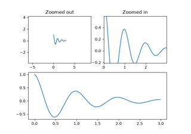
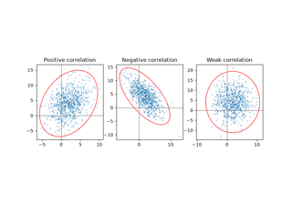
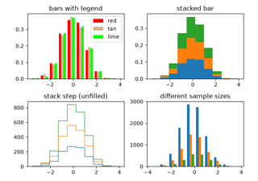

matplotlib.axes.Axes.set_title#
- Axes.set_title(label, fontdict=None, loc=None, pad=None, *, y=None, **kwargs)[source]#
Set a title for the Axes.
Set one of the three available Axes titles. The available titles are positioned above the Axes in the center, flush with the left edge, and flush with the right edge.
- Parameters:
- labelstr
Text to use for the title
- fontdictdict
Discouraged
The use of fontdict is discouraged. Parameters should be passed as individual keyword arguments or using dictionary-unpacking
set_title(..., **fontdict).A dictionary controlling the appearance of the title text, the default fontdict is:
{'fontsize': rcParams['axes.titlesize'], 'fontweight': rcParams['axes.titleweight'], 'color': rcParams['axes.titlecolor'], 'verticalalignment': 'baseline', 'horizontalalignment': loc}
- loc{'center', 'left', 'right'}, default:
rcParams["axes.titlelocation"](default:'center') Which title to set.
- yfloat, default:
rcParams["axes.titley"](default:None) Vertical Axes location for the title (1.0 is the top). If None (the default) and
rcParams["axes.titley"](default:None) is also None, y is determined automatically to avoid decorators on the Axes.- padfloat, default:
rcParams["axes.titlepad"](default:6.0) The offset of the title from the top of the Axes, in points.
- Returns:
TextThe matplotlib text instance representing the title
- Other Parameters:
Examples using matplotlib.axes.Axes.set_title#



Controlling view limits using margins and sticky_edges



Plot a confidence ellipse of a two-dimensional dataset



The histogram (hist) function with multiple data sets


3D wireframe plots in one direction


Radar chart (aka spider or star chart)


Move x-axis tick labels to the top